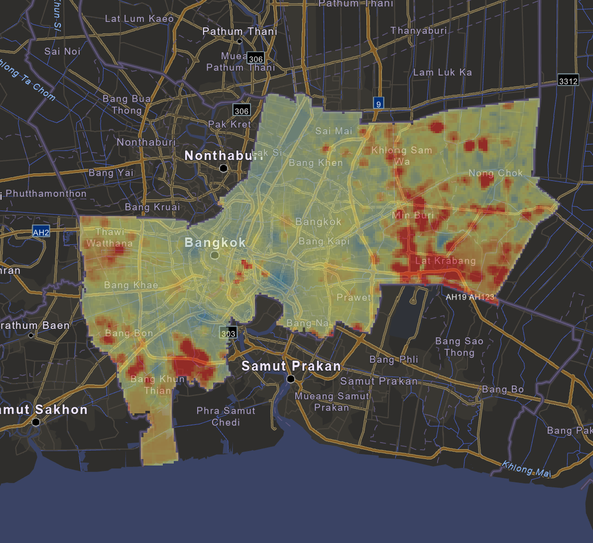

01 / SPATIAL MODELING
Bangkok PM2.5 Spatial Modeling & Mapping
Applied GIS-based analysis to examine spatial and temporal patterns of PM2.5 concentrations in Bangkok.
This work is part of my master’s thesis. It employs a time-series approach integrated with a multiple linear regression model a mathematical framework used to analyze the relationships between independent and dependent variables. In this study, PM2.5 is designated as the dependent variable (Y) with land-use and meteorological factors incorporated as independent variables for the analysis.
